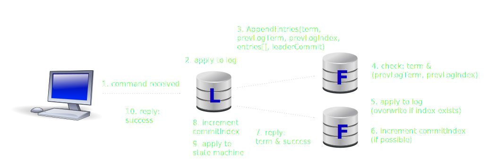
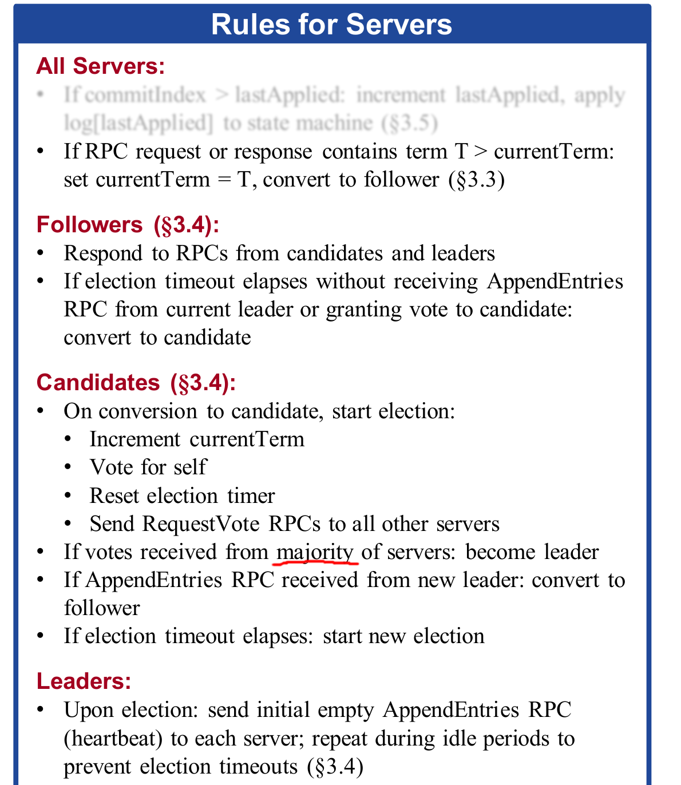
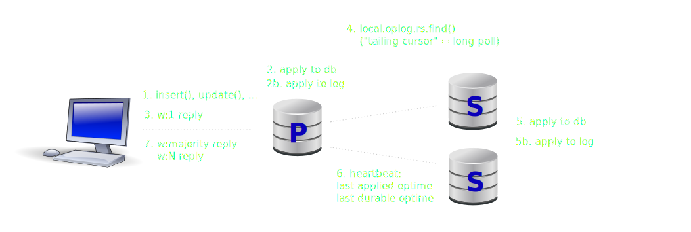

MongoDB and Raft
How MongoDB replication follows and doesn't the Raft algorithm
Henrik Ingo
Senior Performance Engineer
PGDay Russia, 2017-07-09
Image CC BY-SA:
bertogg @ flickr
Clipart: openclipart.org
Presentation: (C) Henrik Ingo, 2017. Please share and reuse as explained in the CreativeCommons Attribution License.


Agenda
- Raft
- MongoDB replication
Raft
English: lifeboat, floating device
Academic: Leader based distributed consensus algorithm
John Osterhout, Diego Ongaro (USENIX 2014)
In practice: Single-master synchronous replication protocol
Similar to Vievstamp replication. Alternative to Paxos.
Raft goals
Easy to understand
Easy to discuss trade offs
Complete and practical
(Actually works if implemented)
Raft's concept of time
Raft replicates a log. The state machine (aka database) is secondary.
At any given time, (at most) one node is leader.
Leaders are chosen with elections.
Time between elections is called term.
When observing new term, servers must immediately adopt it.
Example Raft log
| index | term | command |
| 1 | 1 | a <- 5 |
| 2 | 1 | a <- 7 |
| 3 | 1 | b <- 1 |
| 4 | 2 | ... |
| 5 | 2 | ... |
| 6 | 4 | ... |
| 7 | 4 | ... |
| 8 | 4 | ... |
| 9 | 4 | ... |
Raft replication
Raft leader election

Raft limitations
- Replication first, then apply:
- Assumes that transactions are deterministic and always succeed
- Good for key-value store
- Modification: Transactional databases replicate during pre-commit
- Simplicity over optimized:
- AppendEntries will do linear scan of log to find starting position
- Term inflation or leader flip-flopping
Additional reading on Raft
- RaftScope: Interactive visualization of a Raft cluster
- 4 modifications for Raft consensus, Henrik Ingo
- Avoid minor annoyances like leader flip-flops and term inflation
- Raft Refloated, Heidi Howard
- Durability and elections with other than majority
MongoDB Replication
MongoDB replication
MongoDB replica sets (2010)
|
|
Protocol Version 0 (1.6 - 3.0)
- MongoDB pv0 issues not in Raft:
- Replication & heartbeats too independent=inconsistent
- Too many things to consider when casting a vote
- Highest priority?
- Who is freshest?
- Who appears to be available?
- For added emphasis: veto votes!
- Lack of term
- Sleep 30 sec to prevent double voting in same election
- A rogue (previously stuck) node believes he is primary, with highest optime: All other nodes need to roll back committed transactions.
Adopt term concept
Replication counts as heartbeat
Highest priority node likely,
but not guaranteed to win
Freshness: Only majority commit guaranteed
Simplify: Vote for first qualified candidate
No veto!
Protocol Version 1 (3.2 - )
- Configurable election timeout
- Disk based durability on secondaries
Related 3.2-3.4 enhancements
PV0 oplog entry
> db.oplog.rs.find().sort( { $natural : -1 } ).limit(1).pretty()
{ "ts" : Timestamp(1444466011, 1),
"h" : NumberLong("-6240522391332325619"),
"v" : 2,
"op" : "i",
"ns" : "test.nulltest",
"o" : { "_id" : 3, "a" : 3 }
}
unix time + counter
hash = gtid
PV1 oplog entry
> db.oplog.rs.find().sort( { $natural : -1 } ).limit(1).pretty()
{ "ts" : Timestamp(1445632081, 861),
"t" : NumberLong(42),
"h" : NumberLong("5466055178864103715"),
"v" : 2,
"op" : "u",
"ns" : "ycsb.usertable",
"o2" : { "_id" : "user645414720104877157" },
"o" : { "$set" : { "field4" : BinData(0,"KT5sN1wrPl...Ny9wIg==") }
}
same, used as Raft index
Raft term
random integer = gtid
MongoDB replication summary
- Leader based
- Pull based
- Apply first, then replicate
- writeConcern & readConcern
Additional reading
Questions?
A young woman trying on earrings.
Rembrandt
CC-BY jankruithof @ Flickr